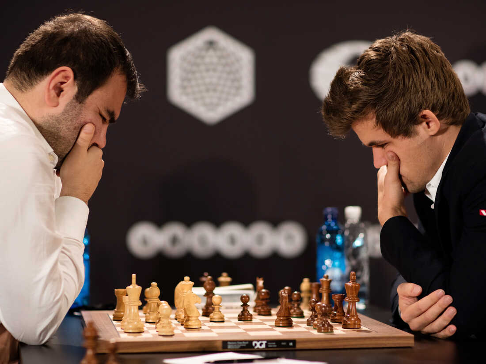

Üdvözöllek az oldalamon! Célom, hogy felkeltsem az érdeklődésed a sakk iránt. Úgy hiszem, ez az egyik
legizgalmasabb hobbi, amit ember kitalált.
Gondolkodni, alkotni jó, a kreativitás, amit én főként a sakkban élek meg, teljesebbé teheti az
életet. - Polgár Judit

Miért érdemes sakkozni?
Ki ne ismerné a sakkot? Talán minden idők legnépszerűbb játéka, mely 1500
éve osztatlan sikert arat minden korosztályban. Sőt, most éli reneszánszát.
Egyre több fiatal kezdett napjainkban érdeklődni a sakk iránt, köszönhetően a Queen's Gambit c. filmsorozatnak.
Vajon miért van ez? Mégis mit tesz hozzá a bábuk tologatása az életünkhöz?
Érdekel már a sakk? Szeretnél profi lenni?
A FIDE egy nemzetközi szervezet, amely
koordinálja koordinálja a sakk, mint sportág nemzetközi életét,
nyilvántartja és
minősíti a sakkversenyzőket, szervezi a férfi, női,
ifjúsági és junior
világbajnokságokat, a sakkolimpiákat, kontinensbajnokságokat és egyéb nemzetközi
versenyeket,
meghatározza a nemzetközileg érvényes szabályokat.

{kind=link}
{kind=link}